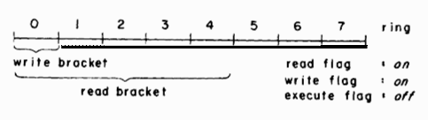
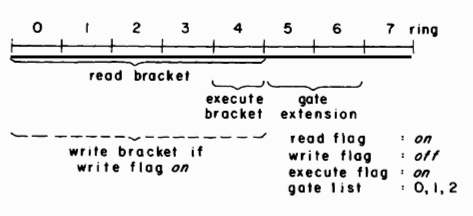
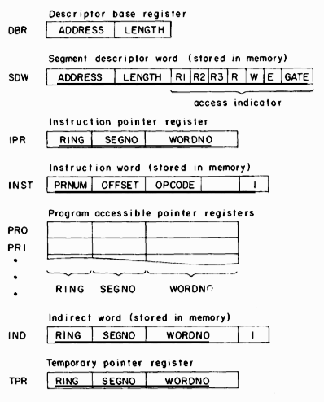
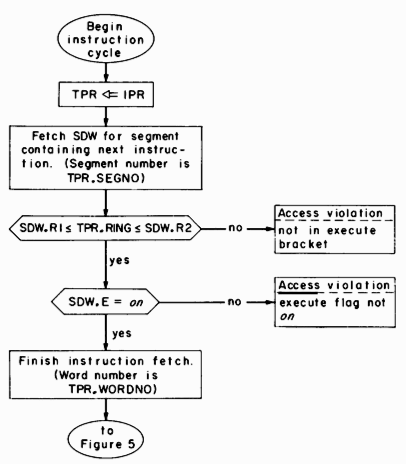
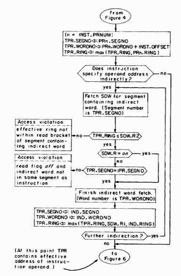
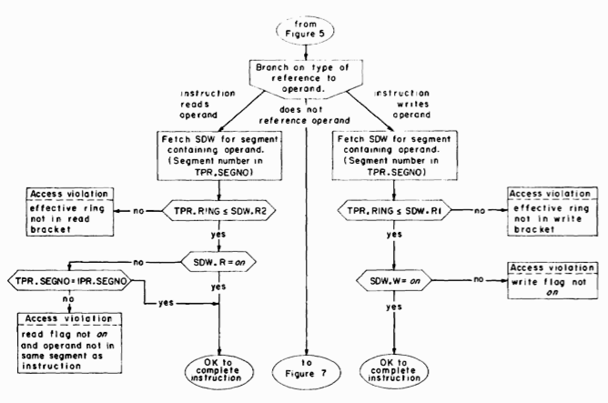
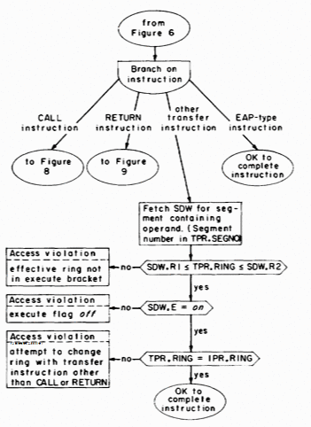
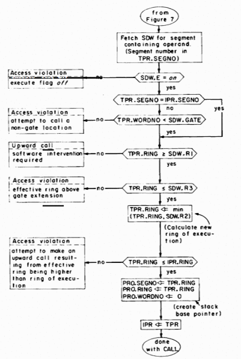
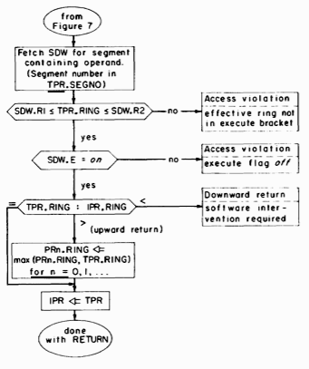

A Hardware Architecture for Implementing Protection Rings
Protection of computations and information is an important aspect of a computer utility. In a system which uses segmentation as a memory addressing scheme, protection can be achieved in part by associating concentric rings of decreasing access privilege with a computation. This paper describes hardware processor mechanisms for implementing these rings of protection. The mechanisms allow cross-ring calls and subsequent returns to occur without trapping to the supervisor. Automatic hardware validation of references across ring , boundaries is also performed. Thus, a call by a user procedure to a protected subsystem (including the the supervisor) is identical to a call to a companion user procedure. The mechanisms of passing and referencing arguments are the same in both cases as well.
Key Words and Phrases: protection, protection rings, protection hardware, access control, hardware access control, computer utility, time-sharing, shared information, segmentation, virtual memory, Multics
CR Categories: 4.32, 6.21
Introduction
The topic of this paper is the control of access to stored information in a computer utility. The paper describes a set of processor access control mechanisms that were devised as part of the second iteration of the hardware base for the Multics system. These mechanisms provide a hardware implementation of protection rings which limit the access privileges of an executing program.
Multics is a general purpose, multiple user, interactive computer system developed at Project MAC of MIT in a joint effort with the Cambridge Information Systems Laboratory of Honeywell Information Systems Inc. and, until 1969, the Bell Telephone Laboratories. It was built and is being run as an experiment in designing, implementing, operating, and evaluating a prototype computer utility. (Reference [14] contains a bibliography of publications on Multics.)
Multics is currently implemented on a Honeywell 645 computer system. The 645 represents a first attempt to define a suitable hardware base for a computer utility. While containing special logic to support a segmented virtual memory, the 645 processor [10] provides only a limited set of access control mechanisms, forcing software intervention to implement protection rings. In the course of Multics development a second iteration of the design of the hardware base has been undertaken. The resulting new hardware system is being built as a replacement for the 645 using the technology of the Honeywell 6000 series computer systems. The new processor includes an improved set of access control mechanisms, described here, which implement rings almost completely in hardware. These mechanisms were developed from a scheme described in [16]. Although specifically designed for Multics, the mechanisms are applicable to any computer system which uses segmentation as a memory addressing scheme.
This paper begins by establishing the general need to control access to stored information in a computer utility and by presenting several criteria for comparing different sets of access control mechanisms. Relevant aspects of the organization of segmented memories are then sketched, and the processor mechanisms for implementing protection rings are described. The paper concludes by illustrating how rings can be used and by evaluating the impact of a hardware system design.
Access Control in a Computer Utility
Protection of computations and information is an important aspect of a computer utility. The multiple users of a computer utility have different goals and are responsible to different authorities. Such a diverse group will use the same system only if it is possible for them to achieve independence from one another. On the other hand, a great potential benefit of a computer utility is its ability to allow users to easily communicate, cooperate, and build upon one another's work. The role of protection in a computer utility is to control user interaction-guaranteeing total user separation when desired, allowing unrestricted user cooperation when desired, and providing as many intermediate degrees of control as will be useful.
While there are many manifestations of protection in a computer utility, most may be related to controlling access to stored information. Because stored information represents both data and executable procedure, control of access to stored information serves to regulate information processing as well.
Four criteria can be applied to a set of access control mechanisms to judge its usefulness in a computer utility: functional capability, economy, simplicity, and programming generality. The first means that a set of access control mechanisms should be able to meet an interesting set of user protection needs in a natural way. The ability to meet interesting protection needs must be a quality of the basic mechanisms, while the ability to do so in a natural way is a quality of their user interface. An obvious goal in designing new protection mechanisms is to maximize functional capability.
The second criterion, economy, means that the cost of specifying and enforcing a particular kind of access constraint with a set of mechanisms should be so low that it is not an important consideration in determining the type of access control to be used in a particular application. In addition, cost should be proportional to the functional capability actually used. The existence of access control mechanisms with sophisticated capabilities should cost no extra to those with unsophisticated needs. Cost includes the subsystem complexity and user inconvenience that result from use of the access control mechanisms, as well as any associated extra storage space and execution time.
Simplicity is the third criterion. While it is true that simplicity often leads to economy, something more is at stake. For a set of access control mechanisms to be accepted there must be confidence that no way exists to circumvent it. The best way to achieve confidence is to keep the mechanisms so simple that they may be completely understood. With respect to access control mechanisms, lack of simplicity often implies lack of security.
The fourth criterion, programming generality, is often neglected. It means that individual procedures may be combined easily into larger units without understanding or altering their internal organizations. Programming generality allows sharing to be effective in encouraging users to build upon one another's work. An implication of programming generality of relevance to access control mechanisms is that it should be possible to change the protection environment of procedures and collections of procedures without altering their internal structure.
It clearly is difficult to design access control mechanisms which satisfy all four of these criteria simultaneously. Increases in functional capability come at the expense of economy, simplicity, and programming generality. The challenge in designing a set of access control mechanisms is to maximize functional capability within the constraints of the other three criteria. In the following sections a set of hardware access control mechanisms that was devised in the course of Multics development is described. These mechanisms appear to provide a significant improvement in the simultaneous satisfaction of the four criteria as compared with the mechanisms in the initial M ultics implementation.
Segmented Virtual Memory Environment
The processor access control mechanisms described here regulate the ability of an executing program to reference information in a segmented virtual memory. As a basis for understanding these access control mechanisms this section briefly reviews the structure of a typical segmented virtual memory. (See [1-3] for detailed descriptions of several segmented virtual memories.)
A machine language program for a segmented environment does not reference memory by absolute address. Rather, its memory consists of independent segments identified by number. Each segment is a separate array of words. A two-part address (s, w) identifies word w of the segment numbered s.
The collection of segments in the virtual memory is defined by a descriptor segment containing an array of segment descriptor words (SDW's). Each SDW can describe a single segment in the virtual memory. The number of a segment is just the index of the corresponding SDW in the descriptor segment. Among other things, an SDW contains the absolute address of the beginning of the corresponding segment in memory. The absolute address of the beginning of the descriptor segment is contained in the descriptor base register (DBR) of a processor. Each processor contains logic for automatically translating two-part addresses into the corresponding absolute addresses. Address translation, done with an indexed retrieval of the appropriate SDW from the descriptor segment, occurs each time a word in the virtual memory is referenced, i.e. each time an instruction, indirect word, or instruction operand reference is made by an executing program.
Storage for segments is usually allocated with a paging scheme in scattered fixed-length blocks. If used, paging is also taken into account by the address translation logic, but is totally transparent to an executing machine language program. Paging, if appropriately implemented, need not affect access control; it will be ignored in the remainder of this paper.
Changing the absolute address in the DBR of a processor will cause the address translation logic to interpret two-part addresses relative to a different descriptor segment. This facility can be used to provide each user of the system with a separate virtual memory. A single segment may be part of several virtual memories at the same time, allowing straightforward sharing of segments among users.
Controlling Access in a Segmented Virtual Memory
To provide a framework for discussion, three specific assumptions true of Multics are introduced. First, a process with a new virtual memory is created for each user when he logs in to the system, and the name of the user is associated with the process. The process is the active agent of the user, and is his only means of referencing and manipulating information stored on-line. Second, on-line storage is organized as a collection of segments of information. A process can reference a segment of on-line storage only if the segment is first added to the virtual memory of the process. Third, the users that are permitted to access each segment are named by an access control list associated with each segment. As will be seen, any system providing access control of the type under discussion will probably have analogous assumptions. The application of the rest of the discussion to other systems with segmented virtual memories is straightforward.
Adding a segment to a virtual memory, an operation performed by supervisor programs, provides the initial opportunity for controlling access to information stored on-line. The name of the user associated with a process must match some entry on the access control list of a segment before the supervisor will add that segment to the the virtual memory of the process.
Once a segment is included in the virtual memory, however, finer control on access is required. (If a process could, say, write in any segment to which it had access, little sharing of information among users would occur.) If this finer control is to be effective against arbitrary machine language programs constructed by users, it must be implemented as hardware access validation on each reference. The structure of the virtual memory makes it natural to record these finer constraints in the SDW associated with each segment. Since the processor must examine the SDW for a segment each time that segment is referenced by two-part address anyway, there is little effort added to validate the intended access against constraints recorded there. With this structure it is also possible to change the allowed access to a segment by changing the finer constraints recorded in the SDW, and to expect the change to be immediately effective, although the need for such dynamic changes is rare.
Flags which enable a segment to be read, written, and executed are natural constraints to record in each SDW. The value for each flag comes from the access control list entry which matched the name of the user associated with the process. An attempt by a process to change the contents of a word of a segment, for example, would be allowed by the processor only if the write flag were on in the SDW for the segment. This mechanism provides individual control on the ability of each user's process to read, write, and execute the words in each segment stored on-line. It also makes a segment the smallest unit of information that can be separately protected.
With the access control mechanisms described so far, all programs executed as part of some process have the same information accessing capabilities. However, there seems to be an intrinsic need in many computations for the access capabilities of a process to vary as the execution point passes through the various programs that direct the computation. The most obvious examples of this need are explicit invocations of supervisor programs during the course of a computation. The execution point may pass from a user program to a supervisor program to initiate an input/output operation or change the access control list of a segment, and then pass back to the user program. Presumably the executing supervisor program can access information in some way that the user program cannot. In a system that allows and encourages sharing of information among users, other examples appear. For instance, user A may wish to allow user B to access a sensitive data segment, but only through a special program, provided by A, that audits references to the segment. During the course of a computation in a process of user B, access to the sensitive data segment should be allowed only when the execution point is in the special program provided by A.
The word "domain" is frequently associated with a set of access capabilities. The examples above point to an intrinsic need for multiple domains to be associated with a process and for the domain in which the process is executing to occasionally change as the execution point passes from one program to another. A descriptor segment with read, write, and execute flags in the SDW's defines a single domain. Additional mechanisms are required to allow multiple domains to be associated with a single process.
A very general set of access control mechanisms would place no restriction on the number of domains which could be associated with a process, and would force no restrictive relationships to exist among the sets of access capabilities included in the domains. Unfortunately, devising such a set of access control mechanisms that also meets the criteria of economy, simplicity, and programming generality is a difficult research problem. (See [5,7,8,12, 13, 17] for several approaches that have been explored.) In Multics the strategy was adopted of limiting the number of domains which may be associated with a process, and of forcing certain relationships to exist among the sets of access capabilities included in the domains. The result is protection rings.
The characterization of rings as a restricted implementation of domains is the result of hindsight. When developed, rings were viewed as a natural generalization of the supervisor/user modes that provided protection in many computers. This path of development was chosen because it solved the most pressing problems of access control involved in the prototype computer utility and, due to the inherent simplicity of the idea, it was a path that the Multics designers felt confident they could successfully complete. Even today rings appear to provide an effective trade-off among the criteria mentioned above.
Protection Rings
Associated with each process are a fixed number of domains called protection rings. These r rings are named by the integers 0 through r - 1. The access capabilities included in ring m are constrained to be a subset of those in ring n whenever m > n. Put another way, the sets of access capabilities represented by the various rings of a process form a collection of nested subsets, with ring 0 the largest set and ring r - 1 the smallest set in the collection. Thus, a process has the greatest access privilege when executing in ring 0, and the least access privilege when executing in ring r - 1. The total ordering of the sets of access capabilities defined by the consecutively numbered rings of a process is the property which allows a straightforward implementation of rings in hardware.
As described earlier, the permission flags for each segment in the virtual memory of a process simply indicate that the segment can or cannot be read, written, or executed by the process. With the addition of rings, the flags must be extended to indicate which rings include each access capability. Because of the nested subset property of rings, the capability, say, to write a particular segment, if available to a process at all, is included in all rings numbered less than or equal to some value w. The range of rings over which this write permission applies is called the write bracket of the segment for the process. Read and execute brackets for each segment can be established in the same way. A process is permitted to read, write, or execute a segment in its virtual memory only if the ring of execution of the process is within the proper bracket.
A partial hardware implementation of rings places numbers indicating the top of each bracket of a segment in the SDW of the segment, along with the read, write, and execute flags. If a flag is on, then the number specifies the extent of the corresponding bracket. Turning a flag off indicates that the corresponding access capability is not included in any ring of the process. For example, a data segment might have its execute flag turned off or a pure procedure segment might have its write flag turned off. A register is added to the processor to record the current ring of execution of the process. The processor can then validate each reference to a segment by making the obvious comparisons when the SDW for the segment is examined for address translation.
Figure 1 illustrates the flags and brackets that might be associated with a writable data segment for some process. (In Multics, eight was chosen as the appropriate number of rings. Eight rings are shown in the examples, although more or fewer rings might be appropriate in another system.)
Fig. 1. Example access indicators for a writable data segment.

The association of multiple domains of protection with a process generates the need for a new kind of access capability-the capability to change the domain of execution of a process. Since changing the domain of execution has the potential to make additional access capabilities available to a process, it is an operation that must be carefully controlled. An understanding of the sort of control required can be gained by reviewing the purpose of domains. A domain provides the means to protect procedure and data segments from other procedures that are part of the same computation. Using domains, it should be possible to make certain access capabilities available to a process only when particular programs are being executed. Restricting the start of execution in a particular domain to certain program locations, called gates, provides this ability, for it gives the program sections that begin at those locations complete control over the use made of the access capabilities included in the domain. Thus, changing the domain of execution must be restricted to occur only as the result of a transfer of control to one of these gate locations of another domain.
With a completely general implementation of domains, each domain could provide protection against the procedures executing in all other domains of a process. The corresponding property of rings is that the protection provided by a given ring of a process is effective against procedures executing in higher numbered rings. Switching the ring of execution to a lower number makes additional access capabilities available to a process, while switching the ring to a higher number reduces the available access capabilities. Thus, the downward ring switching capability must be coupled to a transfer of control to a gate into the lower numbered ring. Gates are specified by associating a (possibly empty) list of gate locations with each segment in the virtual memory of a process. If the execution point of the process is transferred to a segment while the ring of execution is above the top of the execute bracket for the segment, then the transfer must be directed to one of the gate locations in the segment. If the transfer is to a gate, then the ring of execution of the process will switch down to the top of the execute bracket of the segment as the transfer occurs. If the transfer is not directed to one of the gate locations, then the transfer is not allowed.
To provide control of this downward ring switching capability which is consistent with the subset property of rings, a gate extension to the execute bracket of a segment is defined. The gate extension specifies the consecutively numbered rings above the execute bracket of the segment that include the "transfer to a gate and change ring" capability for the segment. The gate list and the gate extension to the execute bracket can both be specified with additional fields in each SDW.
In contrast to downward ring changes, switching the ring of execution to a higher-numbered ring can only decrease the available access capabilities of a process. Thus, an upward ring switch is an unrestricted operation that can be performed by any executing procedure. (The instruction to be executed immediately following an upward ring switch must come from a segment that is executable in the new, higher-numbered ring.) For programming convenience, the upward ring switch may be coupled to a special transfer instruction.
The abstract description of rings is now one step from completion. The last step comes from the observation that for each procedure segment in the virtual memory of each process there is a lowest-numbered ring in which that procedure is intended to execute. In order to provide the means for preventing the accidental transfer to and execution of a procedure in a ring lower than intended, the requirement that execute brackets have a lower limit at ring 0 is relaxed and instead an arbitrary lower limit is allowed. For many procedure segments the execute bracket will include exactly one
ring-the ring in which the procedure is intended to execute. Procedure segments with wider execute brackets normally will contain commonly used library subroutines that are certified as acceptable for execution in any of several rings.
The arbitrary lower limit on the execute bracket of a segment can be implemented by using the field of an SDW which specifies the top of the write bracket to specify the bottom of the execute bracket as well. The double use of this field does not appear to remove any interesting functional capability. In fact, it eliminates an unwanted degree of freedom in access specification, thereby removing the potential to make certain types of errors, such as allowing both writing and execution of a segment in more than one ring of a process.
Figure 2 shows example access indicators for a pure procedure segment containing gates, and illustrates how the execute and write brackets specified in an SDW must be related.
Fig. 2. Example access indicators for a pure procedure segment which contains gates.

The gate list and the numbers specifying the read, write, and execute brackets and gate extension in each SDW all come from the access control list entry which permitted the process to include the corresponding segment in its virtual memory, as did the values for the read, write, and execute flags.
Call and Return
As argued above, a change in the domain of execution of a process can occur only when the executing procedure transfers control to a gate of another domain. In the context of most programming languages, an interprocedure transfer represents a subroutine call, a return following a call, or a nonlocal goto. Linguistically, all three operations produce a change in the environment of the execution point; this change affects the binding of variable names to virtual storage locations. The call operation has the additional function of transmitting arguments and recording a return point. Performing these functions generally requires the cooperation of both the procedure initiating the operation and the procedure receiving control. If a call, return, or goto changes the domain of execution because it happens to be directed to a gate location of another domain, then the situation becomes more complicated, for neither procedure can depend upon the other to cooperate. An important simplification introduced by restricting domains to a ring structure is that a procedure may assume the cooperation of procedures in lower-numbered rings.
When procedures are shared among different processes and different domains, the addressing environment is usually defined via processor registers, for the procedures must be pure and it is not convenient to embed addresses within them. Part of the function of the call, return, and goto operations is to properly update this environment pointer. In Multics, pure procedures are used with a per process stack, and a stack pointer register provides the required environment definition. The stack of a process is implemented with a separate segment for each ring being used. The stack segment for procedures executing in ring n has read and write brackets that end at ring n. Thus, stack areas for these procedures are not accessible to procedures executing in any ring m > n. In the following discussion the stack pointer register is used as a typical example of the required environment pointer.
The most common ways of changing the ring of execution of a process are a call to a gate of a lower-numbered ring and the subsequent upward return. A downward call represents the invocation of a user-provided protected subsystem or a supervisor procedure. Because the Honeywell 645 was designed around the usual supervisor/user protection method, the version of Multics for this machine implements rings by trapping to a supervisor procedure when downward calls and upward returns are performed. The hardware mechanisms detailed in the next section eliminate the need to trap in these cases. Using these improved hardware access control mechanisms, downward calls and upward returns occur without the intervention of a supervisor procedure and are performed by the same object code sequences that perform all calls and returns.
It is the nested subset property of rings that makes a straightforward hardware implementation of downward calls and upward returns possible. Because of this property, the called procedure automatically has all access capabilities required to reference any arguments that the calling procedure can legitimately specify and to return to the calling procedure in the ring from which it called. However, three problems remain. First, the called procedure must have a way of finding a new stack area without depending upon information provided by the calling procedure. Second, the called procedure must have a way of validating references to arguments, so that it cannot be tricked into reading or writing an argument that the caller could not also read or write. Finally, the called procedure must have a way of knowing for certain the ring in which the calling procedure was executing, so that the called procedure cannot be tricked into returning control to a ring not as high as that of the calling procedure.
The key to solving the first problem, finding a new stack area, is a rule relating the segment number of the stack segment for a ring to the ring number. Using this rule, the processor automatically calculates the segment number of the proper stack segment for the called procedure's ring of execution. By convention, a fixed word of each stack segment can point to the beginning of the next available stack area. Thus, the stack segment number alone can provide the called procedure with enough information from which to construct its own stack pointer. Because the processor provides the stack segment number, no procedure executing in a higher-numbered ring, e.g. the calling procedure, can affect the value of the stack pointer for the called procedure.
The second problem, validating argument references, is solved by providing processor mechanisms which allow a procedure to assume the more restricted access capabilities of any higher-numbered ring for particular operand references. Using these mechanisms, the called procedure can validate access when referencing arguments as though execution were occurring in the (higher-numbered) ring of the calling procedure. Thus, the called procedure, even though it is executing in a ring with more access capabilities than the ring of the calling procedure, can prevent itself from reading or writing any argument that the calling procedure could not also read or write.
The final problem, knowing the ring of the caller, is solved by having the processor leave in a program accessible register the number of the ring in which execution was occurring before the downward call was made. The subsequent return is made to that ring. Thus the calling procedure has no opportunity to lower the number of the ring to which the return is made.
The next two sections describe in more detail how downward calls, argument referencing and validation, and upward returns are implemented. Before proceeding to that description, however, there are two other possibilities to consider: a call and return that do not change the ring of execution, and an upward call and the subsequent downward return. The first presents no protection problem, as both the calling and the called procedures have available the same set of access capabilities. The hardware mechanisms for downward calls and upward returns also work when no change of ring is needed.
The last possibility is more difficult to handle. An upward call occurs when a procedure executing in ring n calls an entry point in another procedure segment whose execute bracket bottom is m > n. When the call occurs, the ring of execution will change to m. The subsequent return is downward, resetting the ring of execution to n. These cases exhibit two unpleasant characteristics of a general cross-domain call and return that were not present in the other cases.
The first is that the calling procedure may specify arguments that cannot be referenced from the ring of the called procedure. (For a downward call, the nested subset property of rings guaranteed that this could not happen.) There are at least three possible solutions to this problem. One is to require that the calling procedure specify only arguments that are accessible in the higher-numbered ring of the called procedure. This solution compromises programming generality by forcing the calling procedure to take special precautions in the case of an upward call. Another possible solution is to dynamically include in the ring of the called procedure the capabilities to reference the arguments. Because a segment is the smallest unit of information for which access can be individually controlled, this forces segments which contain arguments to contain no other information that should be protected differently, again compromising programming generality, unless segments are inexpensive enough that, as a matter of course, every data item is placed in its own segment. It may also be expensive to dynamically include and remove the argument referencing capabilities from the called ring. The third possible solution is copying arguments into segments that are accessible in the called ring, and then copying them back to their original locations on return. This solution restricts the possibility of sharing arguments with parallel processes. None of the three solutions lends itself to a straightforward hardware implementation.
The second unpleasant characteristic is that a gate must be provided for the downward return. (For an upward return the nested subset property of rings made a return gate unnecessary.) The return gate must be created at the time of the upward call and be destroyed when the subsequent return occurs. If recursive calls into a ring are allowed, then this gate must behave as though it were stored in a push-down stack, so that only the gate at the top of the stack can be used. The gates specified in SDW's seem poorly suited to this sort of dynamic behavior. Processor mechanisms to provide dynamic, stacked return gates are not obvious at this time.
Because of these two problems, the hardware described in the next section does not implement upward calls and downward returns without software intervention. Although the same object code sequences that perform all calls and returns are used in these cases as well, the hardware responds to each attempted upward call or downward return by generating a trap to a supervisor procedure which performs the necessary environment adjustments.
The manner in which the stack pointer register value of the calling procedure is saved when a call occurs and restored when the subsequent return occurs has not yet been discussed. For a same-ring or downward call, it is reasonable to trust the called procedure to save the value left in the stack pointer register by the calling procedure and then restore it before the subsequent return, since in these cases the called procedure has access capabilities which allow it to cause the calling procedure to malfunction in other ways anyway. For an upward call and the subsequent downward return, the same convention can be used without violating the protection provided by the lower ring if the intervening software verifies the restored stack pointer register value when performing the downward return.
Hardware Implementation of Rings
In this section the ideas presented in the previous sections are gathered into a description of a design for processor hardware to implement rings. The description touches upon only those aspects of the processor organization that are relevant to access control. The segmented addressing hardware described earlier serves as the foundation of the ring implementation mechanisms.
Figure 3 presents a schematic description of storage formats and processor registers that are relevant to the discussion which follows. The DBR and SDW's have already been mentioned. The three 3-bit ring numbers in an SDW (SDW.RI, SDW.R2, and SDW.R3) delimit the read, write, and execute brackets and the gate extension. The write bracket is rings 0 through SDW.RI, the execute bracket SDW.Rl through SDW.R2, and the gate extension SDW.R2+ I through SDW.R3. Rather than providing a fourth number to specify the top of the read bracket, SDW.R2 is reused for this purpose. Thus the read bracket is rings 0 through SDW.R2. Forcing the top of the read and execute brackets to coincide in this manner does not seem to preclude any important cases, and saves one ring number in the SDW. Supervisor code for constructing SDW's must guarantee that SDW.Rl <= SDW.R2 <= SDW.R3 is true. The single-bit read, write, and execute flags (SDW.R, SDW.W, and SDW.E) also appear. Finally, the list of gate locations of a segment is compressed to a single length field (SDW.GATE) by requiring all gate locations to be gathered together, beginning at location 0 of a segment. SDW.GATE contains the number of gate locations present.
Fig. 3. Schematic description of relevant storage formats and processor registers.

The instruction pointer (IPR) specifies the current ring of execution and the two-part address of the next instruction to be executed. The general form of an instruction word in memory (INS) is also shown for later reference.
The program accessible registers (PR0, PR1, ...) each contain a two-part address and a ring number. Because segment numbers are not generally known at the time a segment is compiled, machine instructions specify two-part operand addresses by giving an offset (in INST.OFFSET) relative to one of the PR's (specified by INST.PRNUM) or IPR. The ring number in a pointer register (PRn.RING) is used to specify a validation level for the address, and is part of the mechanism that allows an executing procedure to assume the access capabilities of a higher-numbered ring for referencing arguments. One of the PR's is intended to serve as the stack pointer register mentioned earlier.
Indirect addressing may be specified in an instruction by setting the indirect flag (INST.I). Indirect words (IND) contain the same information as PR's, and may also indicate further indirection with an indirect flag (IND.I).
There are two aspects to the implementation of rings in hardware. The first is access checking logic, integrated with the segmented addressing hardware, that validates each virtual memory reference. The second is special instructions for changing the ring of execution. The best way to describe the first aspect is to trace the processor instruction cycle, giving particular attention to the places where operations related to access validation occur. The second aspect will be discussed when the description of the instruction cycle reaches the point where the instruction is actually performed.
The first phase of the instruction cycle, retrieving the next instruction to be performed, is described in figure 4. At the point during address translation that the SDW for the segment containing the instruction becomes available, the ring of execution (TPR.RING) is matched against the execute bracket defined in the SDW and the execute flag is checked. If the segment may be executed from the current ring of execution the instruction fetch is completed. The access violations and other conditions requiring software intervention shown in this and following figures generate traps, derailing the instruction cycle. A traps action is described later in this section.
Fig. 4. Retrieval of next instruction to be executed.

The next phase of the instruction cycle, calculating in TPR the effective address of the instruction's operand, is described in Figure 5. This phase occurs only if the instruction has an operand in memory. The effective address is the final two-part address of the operand (after all address modifications and indirections have taken place) together with an effective ring number which is used to validate the actual reference to the operand.
The formation of a two-part address in TPR.SEGNO and TPR.WORONO is very straightforward and is described by Figure 5. The calculation of the ring number portion of the effective address in TPR.RING and the access validation performed before retrieving indirect words, also shown in Figure 5, need further comment.
The effective ring portion of the effective address provides a procedure with the means of voluntarily assuming the access capabilities of a higher-numbered ring when making an instruction operand reference. The effective ring number also records the highest-numbered ring from which a procedure (in the same process) possibly could have influenced the effective address calculation. The first opportunity for the value of TPR.RING to change during effective address calculation occurs if the instruction contains an address that is an offset relative to some PRn. In this case TPR.RING is updated with the larger of its current values (still the current ring of execution) and the ring number in the specified pointer register (PRn.RING). Thus, if PRn.RING contains a value that is greater than the current ring of execution, validation of the operand reference will be as though execution were occurring in this higher-numbered ring.
Fig. 5. Formation in TPR of effective address of instruction operand.

Fig. 6. Access validation for instructions which read or write their operands.

The remaining opportunities to change the value of TPR.RING occur in conjunction with the processing of indirect words involved in the effective address calculation. Each time an indirect word is retrieved, TPR.RING is updated with the larger of its current values, the ring number in the indirect word (INO.RING), and the top of the write bracket for the segment containing the indirect word (SDW.Rl). The ring number in the indirect word has the same purpose as the ring number in a pointer register-forcing validation of the operand reference relative to some higher-numbered ring. Including in the calculation the top of the write bracket of the segment containing the indirect word, however, has another purpose. The top of the write bracket represents the highest-numbered ring from which a procedure in the same process could have altered the indirect word and thereby influenced the result of the effective address calculation. Taking into account SDW.Rl when updating TPR.RING guarantees that the operand reference will be validated with respect to the highest-numbered ring which could have influenced the effective address.
The capability to read an indirect word during effective address formation must be validated before the indirect word is retrieved. Validation is with respect to the value in TPR.RING at the time the indirect word is encountered. At the conclusion of the effective address calculation described in Figure 5, TPR contains the effective address of the instruction operand, including the effective ring number with respect to which the reference to the operand will be validated.
The next phase of the instruction cycle is to perform the instruction. For the purpose of access validation, the possible instructions may be broken into three groups, according to the type of reference made to the operand. Figure 6 shows the access validation for the straightforward cases of instructions which read their operands and instructions which write their operands. The third group, instructions which do not reference their operands, is illustrated in Figure 7. One set in this group is the "Effective Address to Pointer Register" type (EAP-type) instructions which load the RING, SEGNO, and WORONO fields of PRn with the corresponding fields of TPR. The operand is not referenced, so no access validation is required. Instructions of this type are important, as will be seen later, for they are the only way to load PR'S.
The remaining instructions illustrated in Figure 7 are transfer instructions. To provide some protection against changing the ring of execution by accident, all transfer instructions except two, CALL and RETURN, are constrained from doing so. Since a transfer instruction does not reference its operand, but just loads the address of its operand into the instruction counter, no access validation is really required. However, an advance check on whether reloading IPR from TPR will result in an access violation when the next instruction is retrieved is very useful from the standpoint of debugging, for it catches the access violation while it is still possible to identify the instruction which made the illegal transfer. Figure 7 describes the advance check for transfer instructions other than CALL and RETURN.
The two instructions that remain to be considered are the instructions which can change the ring of execution: CALL and RETURN. They are intended to be used to implement the same-named linguistic operations.1 CALL will automatically switch the ring of execution to a lower number and RETURN to a higher number if the occasion requires it. These instructions also function properly for calls and returns within the same ring. When used to perform an upward call or a downward return, the instructions cause traps which allow software intervention.
1 RETURN may also be used to implement the nonlocal goto operation.
Figure 8 describes the access validation and performance of the CALL instruction. Several points require further explanation. The first concerns gates. From Figure 8 it is apparent that a CALL must be directed at a gate location even when the called procedure will execute in the same ring as the calling procedure. The rationale for this use of the gate list of a segment is that it can provide protection against accidental calls to locations that are not entry points, even when the call comes from within the same ring. Thus, SDW.GATE for a procedure segment usually specifies the number of externally defined entry points in the procedure segment. These become gates for higher-numbered rings in the sense described in the previous sections only if the top of the gate extension of the segment is above the top of the execute bracket, i.e. only if SDW.R3 > SDW.R2 for the segment. The price paid for this error detection ability is that if any externally defined entry point in a procedure segment is a gate for a higher-numbered ring, then all are. On intersegment transfers of control within the same ring, the gate restriction can be bypassed by using a normal transfer instruction rather than a CALL. The only exception to having a CALL instruction respect the gate list of the operand segment occurs if the operand is in the same segment as the instruction. Allowing a CALL instruction to ignore the gate list of the segment containing the instruction permits it to be used to implement calls to internal procedures.
The access validation for the CALL instruction is made relative to the ring number computed as part of the effective address. Since, as a result of PR-relative addressing and indirection, the effective ring value (TPR.RING) can be higher than the current ring of execution (IPR.RING), what would appear to be a call within the same ring or to a lower ring with respect to TPR.RING can in fact be an upward call with respect to IPR.RING. Because in normal circumstances this situation represents an error, the decision is made to generate an access violation when it occurs, even if the current ring of execution is within the execute bracket of the called procedure segment.
Fig. 7. Access validation for instructions which do not reference their operands.

Fig. 8. Access validation and performance of the CALL instruction.

Fig. 9. Access validation and performance of the RETURN instruction.

CALL generates in PR0 a pointer to word 0 of the stack segment for the new ring of execution. (The PR to use as this stack base pointer is chosen arbitrarily.) The stack segment selection rule illustrated in figure 8 is that the segment number of the appropriate stack segment is the same as the new ring number.2 The final transfer of control is achieved by reloading IPR.RING, IPR.SEGNO, and IPR.WORONO from the corresponding fields of TPR.
2 Two subtle features may be included at this point by using a more sophisticated stack segment selection rule. If the CALL instruction does not change the ring of execution, then the segment number for the stack base pointer is taken directly from the stack pointer register, allowing the continued use of a nonstandard stack segment for procedures executing in the same ring. If the CALL instruction does change the ring of execution then the new stack segment number is calculated by adding the new ring number to an additional DBR field that specifies the eight consecutively numbered segments that are the standard stack segments of the process. The use of the additional DBR field allows more flexibility in stack segment assignment, facilitating the preservation of stack history following an error and the implementation of forked stacks.
The RETURN instruction is described by Figure 9. The access validation is the same as for other transfer instructions. The ring to which the return is made is specified by the effective ring portion of the effective address generated by the RETURN instruction. In the case that the return is upward, the ring number fields in all pointer registers are replaced with the larger of their current values and the new ring of execution. This replacement, together with the fact that PR'S can only be loaded with EAP-type instructions, guarantees that PRn.RING can never contain a value that is less than IPR.RING, a fact which proves very useful when passing arguments on a downward call and which makes it easy to perform an upward return to the proper ring. (See the next section for details.)
Two items remain to be considered to complete the description of the processor hardware for implementing rings. One is the action of a trap. Traps are generated by a variety of conditions in Figures 4-9, as well as by missing segments and pages, I/O completions, etc. When the processor detects such a condition, it changes the ring of execution to zero and transfers control to a fixed location in the supervisor. A special instruction allows the state of the processor at the time of the trap to be restored later if appropriate, resuming the disrupted instruction.
The other item concerns privileged instructions. Certain instructions, if executable by all procedure segments, could invalidate the protection provided by the ring mechanisms. Among these are the instructions to load the DBR, start I/O, and restore the processor state after a trap. Such instructions are designated as privileged and will be executed by the processor only in ring o. This convention restricts their use to supervisor procedures.
Call and Return Revisited
The intended use of the hardware mechanisms just described is illustrated by considering again two key aspects of the linguistic meaning of the operations call and return.
The first aspect to be reconsidered is the way arguments are passed and referenced. A procedure making a call constructs an array of indirect words containing the addresses of the various arguments to be passed with the call. To inform the called procedure of the location of this argument list, the calling procedure loads a specific PR designated by software convention (call it PRa) with the address of the beginning of the argument list. An instruction of the called procedure can reference the nth argument as its operand by using an indirect address. The location of the indirect word is specified in the instruction as PRa offset by n. If this operand reference constitutes an upward cross-ring argument reference then the proper validation is automatic, for PRa.RING, as set by the calling procedure, must contain a number that is greater than or equal to the number of the ring in which the calling procedure was executing when the call was made. Thus, validation of all argument references by the called procedure will be with respect to an effective ring that is at least as high as the ring of the caller.
The ring number in PRa, then, allows the called procedure to automatically assume the fewer access capabilities of the calling procedure in the case of an upward cross-ring argument reference via PRa and the argument list. Not all argument references, however, will be made in this way. For example, if an argument is an array, then the corresponding argument list indirect word will address the first element. The called procedure may find it convenient to load some free PR, say PR1, with the actual two-part address of the beginning of that array argument so that array indexing can be more easily accomplished. IfPR1 is loaded with an EAP-type instruction whose operand address is specified via PRa and the argument list, then the proper effective ring number will automatically be put in PRI.RING, and subsequent references to the argument via PR1 will also be validated with respect to an effective ring that is at least as high as the ring of the caller. If PR1 is then stored as an indirect word, this effective ring is put into the RING field of the indirect word. In fact, as long as the called procedure does not make an explicit effort to lower the effective ring associated with an argument address, e.g. by zeroing the RING field of an indirect word, then all manipulations of the argument address are safe, and all argument references will be validated with respect to an effective ring that is at least as high as the ring of the caller.3
3 This property allows the correct argument validation to occur naturally when an argument is passed along a chain of downward calls. The RING field of an argument list indirect word will specify the ring which originally provided the argument. If this value is higher than the value of PRa.RING, then the indirect word ring number will become the effective ring for validation of references to the corresponding argument.
The second aspect to be reconsidered with respect to call and return is the way in which a return to the proper ring is accomplished. As described earlier, the hardware guarantees that the RING fields in all PR'S always contain values greater than or equal to the current ring of execution. Thus, after a call all PR'S except PRO, which is altered by the CALL instruction, initially contain the rIng of the caller (or some higher number) in their RING fields. It follows that any scheme for returning which depends upon one of these values is secure. For example, the convention described earlier for restoring the stack pointer register value of the caller before a return makes it natural to address the operand of the RETURN instruction via this restored PR. (For this scheme to work, the return point must have been saved by the caller at a standard position in its stack area before the call occurred.) The RETURN instruction is thus guaranteed to generate an effective ring number no lower than the ring of the calling procedure and therefore will return control to the ring of the caller or some higher-numbered ring.
Use of Rings
Some insight into the functional capabilities of rings can be gained by considering briefly the way the basic mechanisms described in the previous sections are used in Multics.
The ring protection scheme allows a layered supervisor to be included in the virtual memory of each process. In Multics, the lowest-level supervisor procedures, such as those implementing the primitive operations of access control, I/O, memory multiplexing, and processor multiplexing, execute in ring O. The remaining supervisor procedures execute in ring 1. Examples of ring 1 supervisor procedures are those performing accounting, input/output stream management, and file system search direction. (Deciding how many layers to use and which procedures should execute in each layer is an interesting engineering design problem.) Supervisor data segments have read and write brackets that end at ring 0 or ring 1, depending on which layer of the supervisor needs to access each.
Implicit invocation of certain ring 0 supervisor procedures occurs as a result of a trap. Explicit invocation of selected ring 0 and ring 1 supervisor procedures by procedures executing in rings 2-5 of a process is by standard subroutine calls to gates. Procedures executing in rings 6 and 7 are not given access to supervisor gates.
Because separate access control lists for each segment and separate descriptor segments for each process provide the means to control separately the use of each segment by each user's process, not all gates into supervisor rings need be available to the processes of all users, and not all gates need have the same gate extension associated with them. For example, some gates into ring 0 are accessible to the processes of all users, but only to procedures executing in ring 1. Such gates provide the internal interfaces between the two layers of the supervisor. Some gates into ring 1 are accessible to procedures executing in rings 2-5 in the processes of selected users, but are not accessible at all from the processes of other users. An example of the latter kind is a gate for registering new users that is available only from the processes of system administrators.
As pointed out by Dijkstra [6], a layered supervisor has several advantages. Constructing the supervisor in layers enforced by ring protection reinforces these advantages. It limits the propagation of errors, thereby making the supervisor easier to modify correctly and increasing the level of confidence that the supervisor functions correctly. For example, changes can be made in ring 1 without having to recertify the correct operation of the procedures in ring O.
By arranging for standard user procedures to execute in ring 4, rings 2 and 3 become available for the protection of user-constructed subsystems. Subsystems executing in rings 2 and 3 of a process can be protected from procedures executing in rings 4-7 in the same way that the supervisor is protected from procedures executing in rings 2-7. All comments made about a supervisor implemented in rings 0 and 1 of each process apply to protected subsystems implemented in rings 2 and 3. Different protected subsystems may be operated simultaneously in rings 2 and 3 of different processes and several processes may share the use of the same protected subsystem simultaneously. The ring protection scheme allows the operation of user-constructed protected subsystems without auditing them for inclusion in the supervisor. (The software facility that forces standard user procedures to execute in ring 4, and yet allows all users to freely provide ring 3 protected subsystems for one another, is not discussed here.) Examples of protected subsystems that might be provided by various users are a proprietary compiler or a subsystem to provide interpretive access to some sensitive data base and safely log each request for information.
With most user procedures executing in ring 4, rings 5, 6, and 7 are available for user self-protection. For example, a user may debug a program by executing it in ring 5, where only procedure and data segments intended to be referenced by the program would be made accessible. The ring protection mechanisms would detect many of the addressing errors that could be made by the program and would prevent the untested program from accidentally damaging other segments accessible from ring 4. In the same way ring 5 can be used for the execution of an untrusted program borrowed from another user.
Because supervisor gates are not accessible from rings 6 and 7 of any process in Multics, procedures executed in these rings have no explicit access to supervisor functions; they may, however, be given permission to call user-provided gates into rings 4 or 5. Ring 6 of a process might be used, for example, to provide a suitably isolated environment for student programs being evaluated by a grading program executing in ring 4.
The complete description of a software access control facility based on rings that allows them to be used in the manner just outlined would require another paper. A fundamental constraint enforced by this software facility is that a program executing in ring n cannot specify Rl, R2, or R3 values of less than n in an access control list entry of any segment. Although a given ring may simultaneously protect different subsystems in different processes, each ring of each process can protect only one subsystem at a time. A usable software access control facility must constrain each user's ability to dynamically set and modify access control specifications so that this sole occupant property can be verified and enforced when necessary.
Conclusions
The hardware mechanisms derived and described in this paper implement a methodical generalization of the traditional supervisor/user protection scheme that is compatible with a shared virtual memory based on segmentation. This generalization solves three significant kinds of problems of a general purpose system to be used as a computer utility:
- users can create arbitrary, but protected, subsystems for use by others;
- the supervisor can be implemented in layers which are enforced;
- the user can protect himself while debugging his own (or borrowed) programs.
The subset access property of rings of protection does not provide for what may be called "mutually suspicious programs" operating under the control of a single process. On the other hand, it is just that subset property which imposes an organization which is easy to understand and thus allows a system or subsystem designer to convince himself that his implementation is complete. Also, it is just the subset property which is the basis for a hardware implementation that is integrated with segmentation mechanisms, requiring very small additional costs in hardware logic and processor speed.
The long-range effect of hardware protection mechanisms which permit calls to protected subsystems that use the same mechanisms as calls to other procedures is bound to be significant. In the interface to the supervisor of most systems there are many examples of facilities whose interface design is biased by the assumption that a call to the supervisor is relatively expensive; the usual result is to place several closely related functions together in the supervisor, even though only one of the group really needs protection. For example, in the Multics typewriter I/O package, only the functions of copying data in and out of shared buffer areas and of executing the privileged instruction to initiate I/O channel operation need to be protected. But, since these two functions are deeply tangled with typewriter operation strategy and code conversion, the typewriter I/O control package is currently implemented as a set of procedures all located in the lowest-numbered ring of the system, thus increasing the quantity of code which has maximum privilege.
A similar example is found in many file system designs, where complex file search operations are carried out entirely by protected supervisor routines rather than by unprotected library packages, primarily because a complex file search requires many individual file access operations, each of which would require transfer to a protected service routine, which transfer is presumed costly.
The initial version of Multics used software implemented rings of protection. The result was a very conservative use of the rings: originally just two supervisor rings and one user ring were employed, and the two supervisor rings were temporarily collapsed into one (thus exploiting the programming generality objective referred to before) while the software ring crossing mechanisms were tuned up. Today, although there are many obvious applications waiting, the ability to use more than two rings in a computation is just beginning to be exploited. The availability with the new Multics processor of hardware implemented rings which make downward calls and upward returns no more complex than calls and returns in the same ring should significantly increase such exploitation.
Acknowledgments. The concepts embodied in the mechanisms described here were the result of seven years of maturing of ideas suggested by many workers. The original idea of generalizing the supervisor/user relationship to a multiple ring structure was suggested by R.M. Graham, E.L. Glaser and F.J. Corbató. An initial software implementation of rings using multiple descriptor segments [14] was worked out by Graham and R.C. Daley, and constructed by members of the Multics system programming team. That implementation makes use of hardware access mode indicators stored in the segment descriptor word of the Honeywell 645 computer. Graham [9], in 1967, proposed a partial hardware implementation of rings of protection which included three ring numbers embedded in segment descriptor words. and a processor ring register, but which still required software intervention on all ring crossings. Though a related scheme was implemented in the Hitac 5020 time-sharing system [15], this hardware scheme was never implemented in Multics, which today (1971) still uses a version of the software implementation of rings. The complete automation of downward calls and upward returns was proposed in a thesis in 1969 [16]; the description in this paper extends that thesis slightly with the addition of ring numbers to indirect words and the processor pointer registers, as suggested by Daley. The CALL and RETURN instructions proposed there have also been simplified.
The hardware implemented call and return, and automatically managed stacks, were at least partly inspired by similar mechanisms which have long been used on computer systems of the Burroughs Corporation [4, 11].
In addition to those named above, D.D. Clark, C.T. Clingen, R.J. Feiertag, J.M. Grochow, N.I. Morris, M.A. Padlipsky, M.R. Thompson, V.L. Voydock, and V.A. Vyssotsky contributed significant help in understanding and implementing rings of protection.
References
- Apfelbaum, H., and Oppenheimer, G. Design of virtual memory systems. Proc. 1971 IEEE Internat. Com put. Soc. Conf., Boston, pp. 115-116.
- Arden, B.W., et al. Program and addressing structure in a time-sharing environment. J. ACM 13, 1 (Jan. 1966), 1-16.
- Bensoussan, A., Clingen, C.T., and Daley, R.C. The Multics virtual memory. Proc. Second ACM Symposium on Operating Systems Principles. Princeton, N.J., 1969, ACM New York, 1971, pp. 30-42 Also Comm. ACM (to appear).
- Burroughs Corporation. A Narrative Description of the Burroughs B5500 Master Control Program. Detroit, Mich. Oct. 1969.
- Dennis, J.B., and Van Horn, E.C. Programming semantics for multi programmed computations. Comm. ACM 9, 3 (Mar. 1966), 143-155.
- Dijkstra, E.W. The structure of the "THE"- multiprogramming system. Comm. ACM 11,5 (May 1968), 341-346.
- Evans, D.C., and LeClerc, J.Y. Address mapping and the control of access in an interactive computer. Proc. AFIPS 1967 SJCC, Vol. 30, AFIPS Press, Montvale, N.J. pp. 23-30.
- Fabry, R.S. Preliminary description of a supervisor for a computer organized around capabilities. Quarterly Progress Rep. No. 18, Institute of Computer Research, U. of Chicago, I-B 1-97.
- Graham, R.M. Protection in an information processing utility. Comm. ACM 11.5 (May 1968), 365-369.
- Honeywell Information Systems Inc., Model 645 Processor Reference Manual. Cambridge Information Systems Laboratory, Apr. 1971.
- Hauck, E.A., and Dent, B.A. Burroughs' B6500/B7500 stack mechanisms. Proc. AFIPS 1968 SJCC, Vol. 32, AFIPS Press, Montvale, N.J. pp. 245-251.
- Lampson, B.W. An Overview of the CAL Time-Sharing System. Computation Center, U. of California, Berkeley, Sept. 1969.
- Lampson, B.W. Dynamic protection structures. Proc. AFIPS 1969 FJCC, Vol. 35, AFIPS Press, Montvale, N.J., 27-38.
- MIT Project MAC. Multics Programmer's Manual. 1969.
- Motobayashi, S., Masuda, T., and Takahashi, N. The Hitac 5020 time-sharing system. Proc ACM 24th Nat. Conf. 1969, ACM New York, pp. 419-429.
- Schroeder, M.D. Classroom model of an information and computing service. S.M. Th. MIT, Dep. Elec. Eng., Feb. 1969. [Expanded version available as Proj. MAC Tech. Rep. MAC-TR-80.]
- Vanderbilt, D.H. Controlled information sharing in a computer utility. MIT Project MAC, MAC-TR-67, 1969.
Massachusetts Institute of Technology, Project MAC and Department of Electrical Engineering, 545 Technology Square, Cambridge, MA 02139. Work reported herein was supported in part by Project MAC, an MlT research program sponsored by the Advanced Research Projects Agency, Department of Defense, under Office of Naval Research Contract N00014-70-A-0362-0001.
Presented at the Third ACM Symposium on Operating Systems Principles, Palo Alto, California, October 18-20, 1971.
Communications of the ACM, March 1972, Volume 15 Number 3, Copyright © 1972, Association for Computing Machinery, Inc. General permission to republish, but not for profit, all or part of this material is granted, provided that reference is made to this publication, to its date of issue, and to the fact that reprinting privileges were granted by permission of the Association for Computing Machinery.